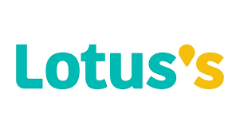

JobNble
แพลตฟอร์มหางานที่สร้างขึ้นเพื่อทุกคน เชื่อมโยงผู้พิการที่มีศักยภาพเข้ากับองค์กรที่เปิดรับความหลากหลาย เรามุ่งมั่นที่จะเป็นส่วนหนึ่งในการสร้างโอกาสทางอาชีพที่เท่าเทียม พร้อมขับเคลื่อนสังคมแห่งการทำงานที่ยั่งยืนและเปิดกว้างสำหรับทุกความสามารถ
ข่าวสาร
-

รัฐบาลหนุนสถานประกอบการจ้างงานผู้พิการ: กระทรวงแรงงานเร่งส่งเสริมนายจ้างปฏิบัติตามกฎหมายจ้างงานผู้พิการ (มาตรา 33) เพื่อสร้างโอกาส ลดความเหลื่อมล้ำ พร้อมเสนอมาตรการลดหย่อนภาษีเพื่อเป็นแรงจูงใจให้องค์กรต่างๆ เปิดรับความหลากหลายมากขึ้น
ดูเพิ่มเติม -

ก.ล.ต. ขับเคลื่อนการจ้างงานคนพิการในตลาดทุนไทย: โครงการนำร่องที่มุ่งสร้างพื้นที่ทำงานที่เปิดกว้าง สนับสนุนบริษัทจดทะเบียนในไทยรับคนพิการเข้าทำงานในสายงานที่เหมาะสมกับศักยภาพ เพื่อมุ่งสู่การเติบโตอย่างยั่งยืนขององค์กร (ESG)
ดูเพิ่มเติม -

ภาคเอกชนชูโมเดล 'Inclusive Workplace': หลายองค์กรชั้นนำในไทยเริ่มปรับสภาพแวดล้อมและนโยบายการทำงาน (Universal Design) เพื่อรองรับพนักงานทุกกลุ่ม รวมถึงผู้พิการทางการเคลื่อนไหว ดึงดูดทักษะที่หลากหลายเข้าสู่องค์กร
ดูเพิ่มเติม
งานที่กำลังได้รับความนิยม
-

พนักงานบัญชี
สถานที่ : สาทร, กรุงเทพฯประเภทความพิการ : ทางการเคลื่อนไหว -

เจ้าหน้าที่ธุรการ (Admin)
สถานที่ : บางนา, กรุงเทพฯประเภทความพิการ : ทางการได้ยิน -

พนักงานบรรจุภัณฑ์
สถานที่ : สมุทรปราการประเภทความพิการ : ทางสติปัญญา -

เจ้าหน้าที่ IT Support
สถานที่ : ดินแดง, กรุงเทพฯประเภทความพิการ : ทางร่างกาย -

พนักงาน Call Center
สถานที่ : ห้วยขวาง, กรุงเทพฯประเภทความพิการ : ทางร่างกาย -

พนักงานคีย์ข้อมูล
สถานที่ : อโศก, กรุงเทพฯประเภทความพิการ : ทางการได้ยิน -

บาริสต้า (Barista)
สถานที่ : ปทุมวัน, กรุงเทพฯประเภทความพิการ : ทางสติปัญญา -

ช่างเย็บผ้าอุตสาหกรรม
สถานที่ : บางแค, กรุงเทพฯประเภทความพิการ : ทางร่างกาย
ยินดีต้อนรับเข้าสู่ JobNble
บริษัทที่โพสต์ประกาศงาน
ร่วมงานกับองค์กรชั้นนำที่พร้อมเปิดรับและสนับสนุนศักยภาพของคุณ
-
")
-
")
-
-
-
")
-

-
วิดีโอพัฒนาทักษะที่น่าสนใจ